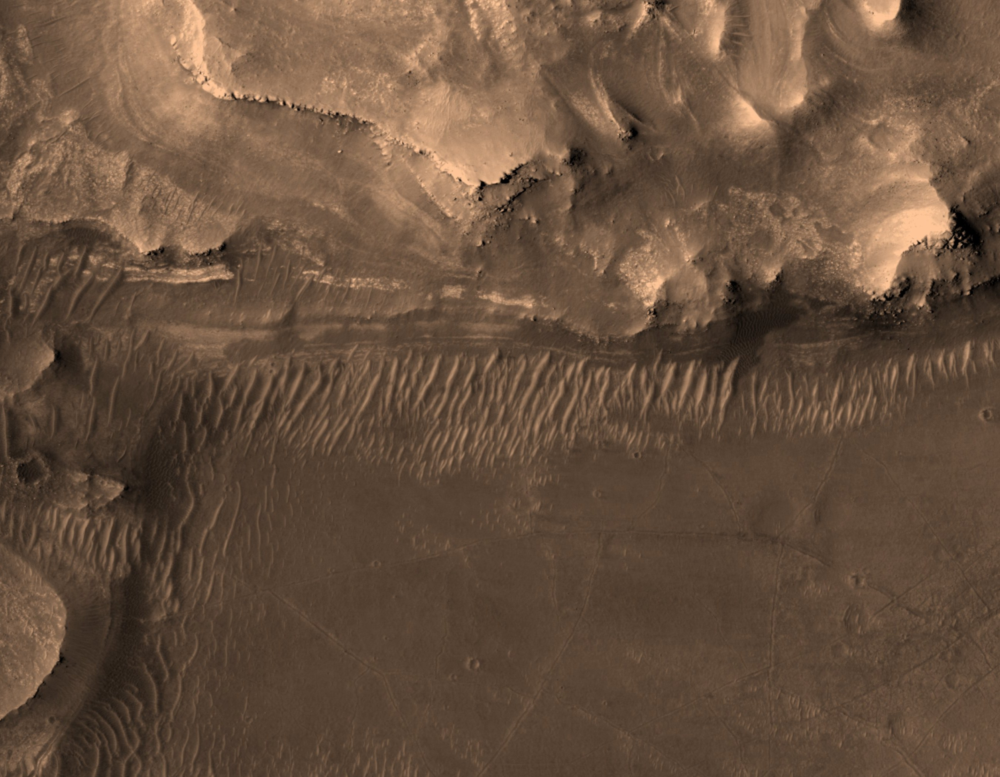
EVA-01 · Jezero · 18.45°N 77.41°E · NASA Space Apps 2026
MARTIAN
MAP
Mars astronotu için yüzey yürüyüşü rotası ve karar desteği. Harita girdi, karar çıktı.
GO
CAUTION
NO-GO
Çıkış
Veri
Motor
Olay
Dönüş
WP 02 · Problem
2 km
Gezegenin haritası var. Astronotun önündeki iki kilometrenin haritası yok.
Çıkış öncesi kontrol listesi · bugünkü araçlarla
Ölçek. Haritalar küresel; rakip projeler 20 ile 40 metrelik arazi modeli kullanıyor. Kayalar ve basamaklar görünmüyor.
İnsan. Planlama araçları tekerlek için. Oksijen, soğutma, yorgunluk ve geri yürüme sınırı hiçbirinde yok.
Karar. Katmanlı harita bir girdidir. Astronotun ihtiyacı çıktı: çık ya da çıkma, hangi yoldan, ne kadar marjla.
Üç kutu da boş. Bu listeyle kimse dışarı çıkmaz.
Kaynak: Space Apps 2026 görev metni; rakip açık repoların incelemesi
Çıkış
Veri
Motor
Olay
Dönüş
WP 03 · Çözüm
Aynı liste, bu kez dolu.
Ölçek. 1 metrelik ızgara, 1.44 milyon hücre.
İnsan. Oksijen marjı rota boyunca her adımda: en dar nokta +429 g.
Karar. Her plan üç seviyeden birine düşer ve gerekçesini yazar.
GO

Çalışan uygulama, Jezero · Three Forks. Solda girdiler, ortada harita, sağda karar, altta rota profili.
Çıkış
Veri
Motor
Olay
Dönüş
WP 04 · Veri katmanları
Beş katman üst üste biner, altından tek bir karar çıkar
Optik
HiRISE 25 cm uydu görüntüsü. Kaya yoğunluğu, arazi sınıfı, kraterler.
Gözlenen
Topoğrafya
USGS 1 metrelik arazi modeli. Eğim, gölge, görüş hattı.
Gözlenen
Spektral
CRISM mineral haritası. Kil, karbonat, olivin: hidrasyon puanı.
Gözlenen
Yer gerçeği
Perseverance izi, Navcam kareleri, örnek tüpü koordinatları.
Gözlenen
Atmosfer
MEDA ölçümlerine dayalı sıcaklık eğrisi, toz şeytanı penceresi, RAD taban dozu.
Modellenmiş
KARAR
Görev şartı en az üç veri türü. Her katman arayüzde kökenini taşır: gözlenen, türetilmiş, modellenmiş ya da varsayım.
HiRISE: NASA/JPL-Caltech/UArizona · DTM: USGS Astrogeology · CRISM: Parente, Itoh, Saranathan (Zenodo 5575824)
Çıkış
Veri
Motor
Olay
Dönüş
WP 05 · HIRISE analizi
Tek sahne, üç bakış
Aynı görüntü soldan sağa işleniyor: önce fotoğraf, sonra arazi, sonra tehlike.
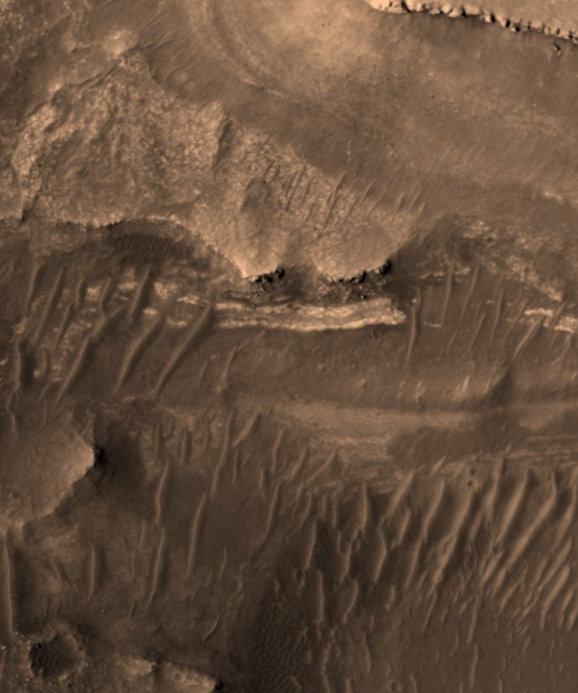
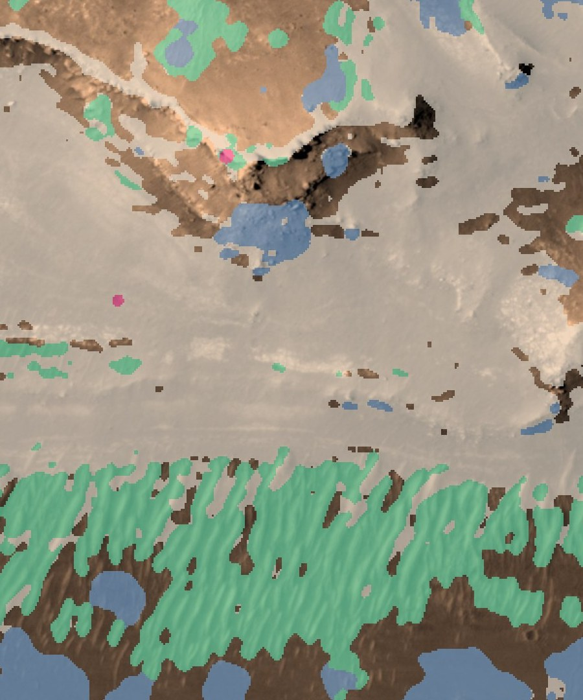

1 · Fotoğraf
25 cm/piksel ham görüntü
2 · Arazi
beyaz anakaya, mavi kayalık, yeşil kum
3 · Tehlike
kaya bolluğu: siyan az, magenta çok
Jezero sahnesi: sıkı toprak %42 · anakaya %24 · kayalık %23 · kum dalgası %11
Çıkış
Veri
Motor
Olay
Dönüş
WP 06 · Ölçek cetveli
Uydu büyük kayayı görür. Astronotu küçük kaya düşürür.
10 cm
bot 30 cm
30 cm
1 piksel 25 cm
1 metre
Takılma bandı: 10 ile 30 cm. Görüntüde yok.
Golombek ve Rapp 1997, JGR 102 · Golombek ve diğ. 2020, Nature Communications · çizim ölçekli: 1 metre = 600 piksel
Çıkış
Veri
Motor
Olay
Dönüş
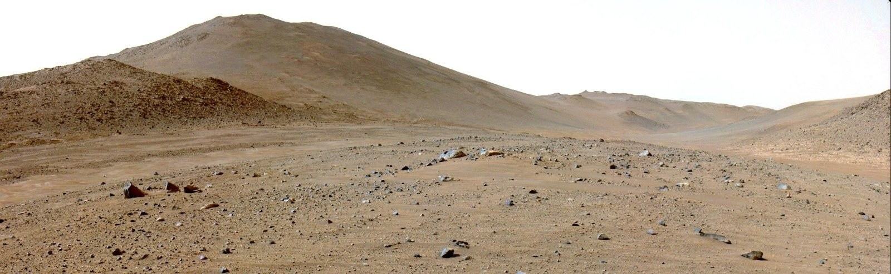
WP 07 · Perseverance yer gerçeği
Varınca ne göreceğim? Rover tam oradan çekti.
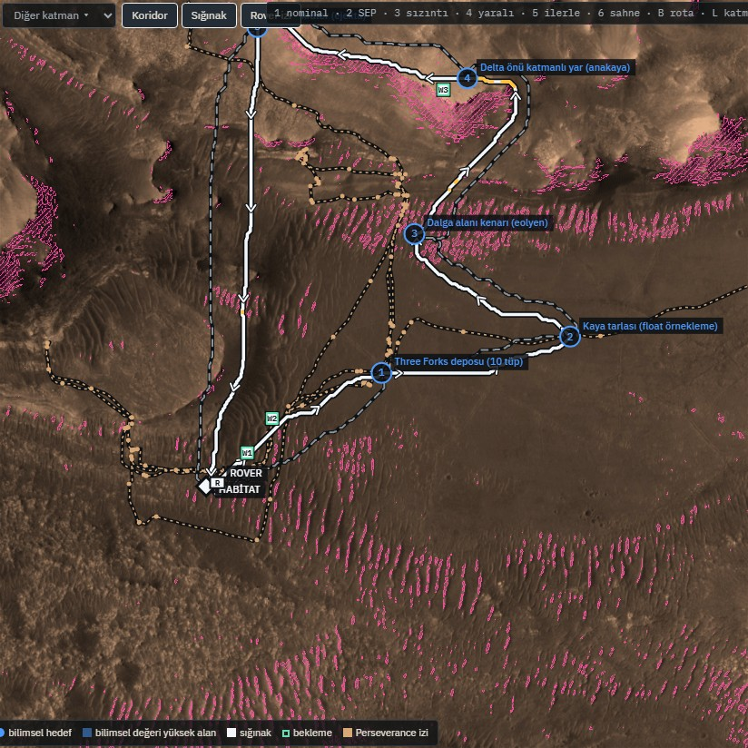
Haritada numaralı hedefler; kesikli çizgi Perseverance'ın gerçek izi (128 yol noktası).
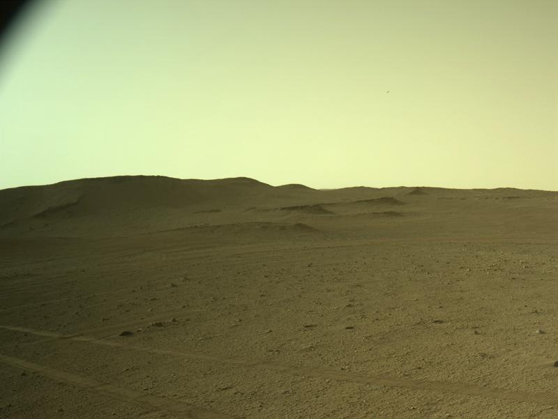
1 Three Forks deposu · sol 663
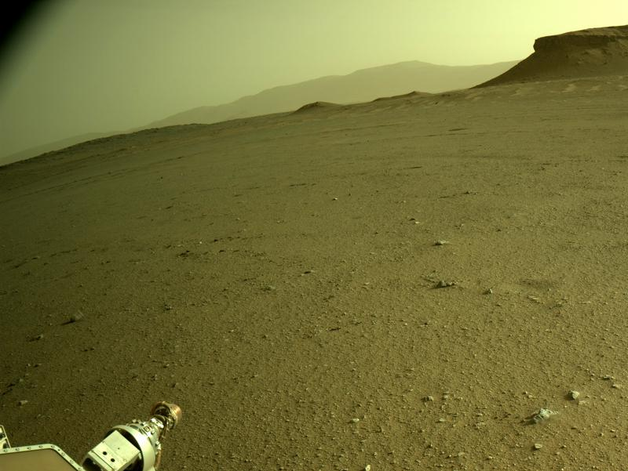
2 Kaya tarlası · sol 409

3 Dalga alanı · sol 538
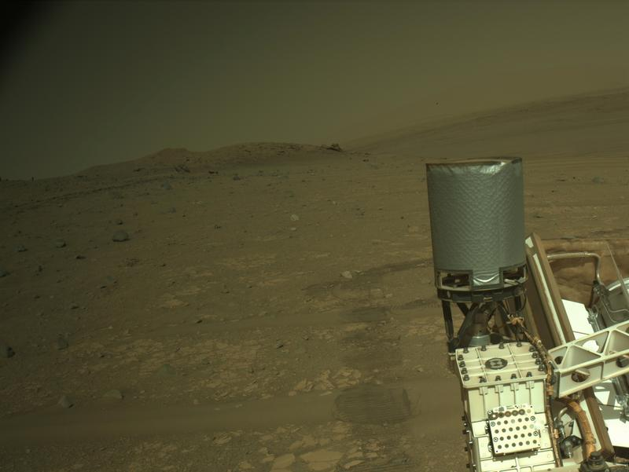
4 Delta önü yarı · sol 707
Hedefe tıklayınca en yakın yol noktasından çekilmiş ham Navcam kareleri açılır. Kask görünümünde arka plan olur.
Arka plan: ekibin seçtiği Mastcam-Z panoraması · görüntüler NASA/JPL-Caltech (Navcam), NASA/JPL-Caltech/ASU/MSSS (Mastcam-Z)
Çıkış
Veri
Motor
Olay
Dönüş
WP 08 · Kendi kendimizi sınadık
Yörünge tahmini yerden görünenle uyuşuyor mu?
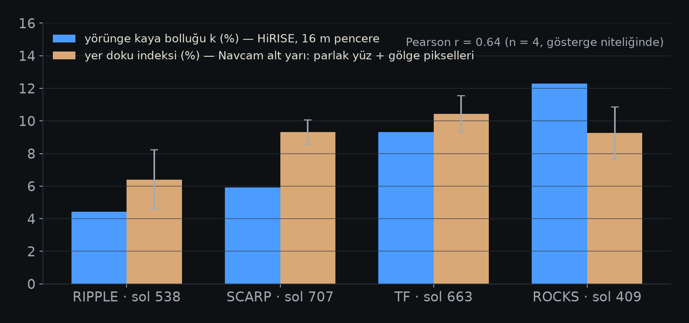
Mavi: uydudan kaya bolluğu. Kum rengi: Navcam karesinin yakın zemininde kaya yüzü ve gölge piksellerinin payı.
3/4
Dört noktanın üçünde sıralama aynı. Kaya tarlasında uydu yerden yüksek okuyor.
Gösterge · kanıt değil
Pearson r = 0.64, n = 4. Yöntem 128 yol noktasına ölçeklenebilir.
Navcam: sol 538, 707, 663, 409 · her noktada 2 ile 4 kare · ölçüm betiği projede: sunum/make_charts.py
Çıkış
Veri
Motor
Olay
Dönüş
WP 09 · Hücre puanları
Her metrekarenin üç notu var
Güvenlik
Buradan geçmek ne kadar riskli? Dördüncü terim: bu hücreden eve dönmenin oksijen bedeli.
Bilim
Burada durmaya değer mi? Yerinde kaya en değerli: Perseverance'ın 30 örneğinin 27'si kaya karotu.
Güven
Bu notlara ne kadar inanmalı? Toplama karışmaz; 65'in altında sistem kendisi uyarır.
Veto. Eğim 25 derecenin, kaya %40'ın üstünde ya da zemin kum dalgasıysa hücre duvardır. Bilim notu ne olursa olsun geçilmez.
Çıkış
Veri
Motor
Olay
Dönüş
WP 10 · Rota motoru
Tek çizgi değil: beş adımda bir plan
1
Sıra. Oksijen ve süre bütçesi içinde en yüksek bilim. Sığmayan hedef gerekçesiyle atlanır.
2
Rota A. Yasak hücrelere girmeden en düşük maliyetli yol.
3
B planı. A'nın en zayıf noktası kapatılır, başka bir yol aranır.
4
Koridor. Çizgi değil şerit; konum belirsizliği kadar genişler.
5
Sığınak. Habitat ve rover; her noktadan kaç dakika.

Beyaz: rota A. Gri kesikli: B planı. Magenta tarama: yasak. Kural tabanlı; içinde dil modeli yok.
Çıkış
Veri
Motor
Olay
Dönüş
WP 11 · Düz çizgiye karşı
Düz çizgi
131
yasak hücreden geçer
Kum dalgaları ve dik yamaçlar. En düşük güvenlik puanı 0.
Martian Map rotası
0
yasak hücre. Bedeli: yüzde 5 daha uzun yol.
En düşük güvenlik puanı 57. B planında 62.
Düz çizgi
2372 m · 290 g O₂
Rota A
2498 m · 287 g
B planı
2704 m · 298 g
Jezero · Three Forks, beş hedef, nominal senaryo · üçü de aynı maliyet modeliyle değerlendirildi
Çıkış
Veri
Motor
Olay
Dönüş
WP 12 · Walk-back kuralı
Her adımda aynı soru: buradan eve dönebilir miyim?
Oksijen tankı 720 g. Kural: kalan oksijen, o noktadan dönüş için gerekenin 1.2 katından az olamaz.
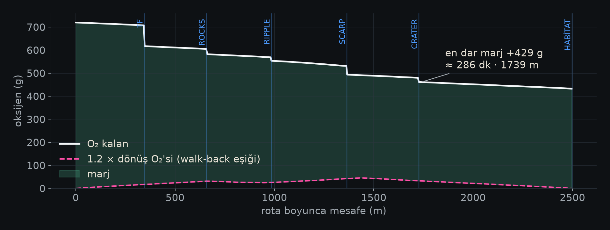
33 g O₂/km düz zeminde (Apollo walk-back varsayımı) · yokuş çarpanı 1 + 3.5·tanθ (Minetti 2002, 0.38 g ölçeği)
Çıkış
Veri
Motor
Olay
Dönüş
WP 13 · EVA saat penceresi
Ne zaman çıkmalı? 07:30, toz şeytanlarından önce.
önerilen EVA · 07:30 → 10:36
toz şeytanı tepesi
06:00
09:00
12:00
15:00
18:00
Çıkış
Veri
Motor
Olay
Dönüş
WP 14 · MASTER CAUTION
Yürüyüşün ortasında bir şey ters giderse
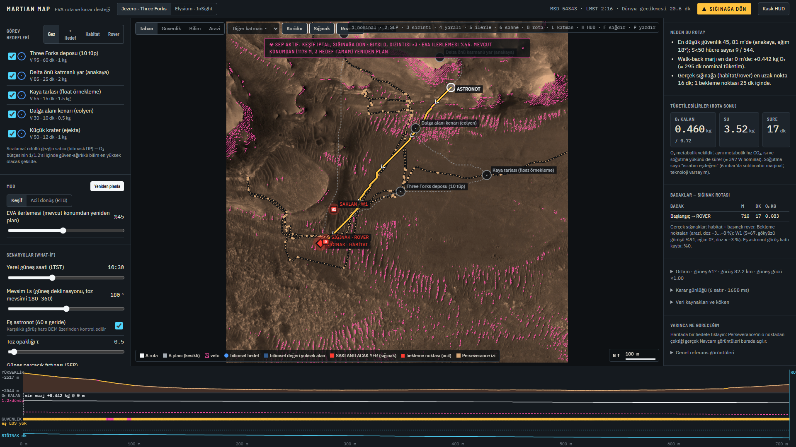
Güneş fırtınası anı. Astronot rotanın %45'inde: 3 hedef tamam, harcanan oksijen ve süre devredildi, sığınaklar kırmızı.
Çıkış
Veri
Motor
Olay
Dönüş

WP 15 · Vizörün içinden
Aynı plan, üç yerde: habitat ekranı, kask vizörü, bilek
Çıkış
Veri
Motor
Olay
Dönüş
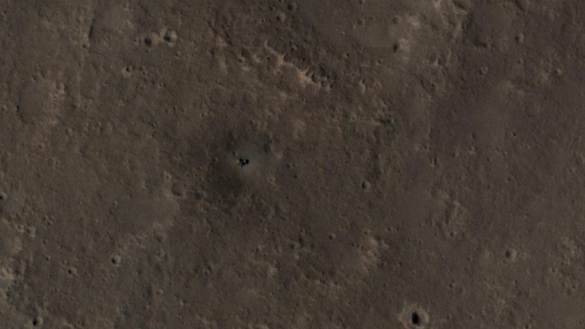
WP 16 · Başka bir yer · ELYSIUM PLANITIA
Aynı motor, ekibin kendi fotoğrafı
InSight iniş yeri. 0.29 m/piksel, 325 × 287 metre. Tek komutla yeni sahne.
CAUTION
Burada arazi modeli yok. Sistem bunu saklamıyor: veri güveni 56, eşik 65. Rota çiziliyor ama karar "dikkat".
Sınıflandırma %97 sıkı toprak. Kaya bolluğu %1.5 ile %5: Golombek 2020 yüzey sayımıyla uyumlu.
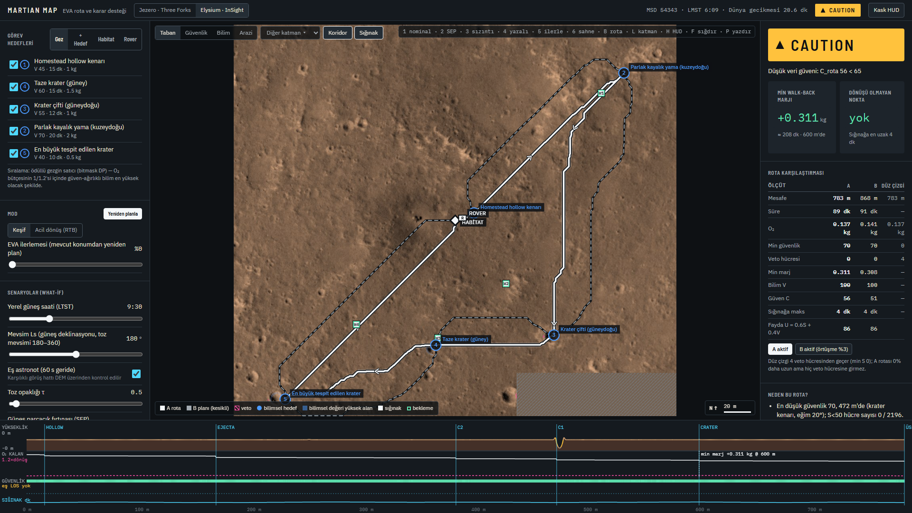
Aynı arayüz, aynı kurallar. Üs: InSight iniş aracı.
PIA26515, 23 Ekim 2024 · NASA/JPL-Caltech/UArizona
Çıkış
Veri
Motor
Olay
Dönüş
WP 17 · Dürüstlük cetveli
Ne ölçtük, ne varsaydık: tek çizgide
◀ ÖLÇTÜK
VARSAYDIK ▶
Eğim, gölge, görüş hattı
USGS 1 m arazi modelinden doğrudan.
Mineral ve hidrasyon
CRISM, 36 m; kaba ama ölçülmüş.
Arazi sınıfı, kaya dağılımı
Görüntü dokusundan türetildi; göreli dağılım güvenilir.
Bekleme noktaları
Radyasyonu yalnız %3 ile %8 düşürür; gerçek sığınak habitat ve rover.
Sıcaklık, güneş
MEDA tipi günlük eğri; model.
Jezero kaya ölçeği
%5 ile %25; yayınlanmış sayım yok.
Güvenlik 70, bilim 30
Politika; arayüzde kaydırıcı.
Rota kararını veren kısımda dil modeli yok. Yapay zekâ araştırma sentezinde, kod yazımında ve raporlamada kullanıldı.
Çıkış
Veri
Motor
Olay
Dönüş
WP 18 · Makine dairesi
3.0 s
1.44 milyon hücre, tarayıcıda, sunucusuz
İlk sürüm 9.7 saniyeydi. Rota sonucu değişmeden üçte birine indi.
Plan süresi · Jezero sahnesi
9.7 s · ilk sürüm
5.1 s · önbellek, kovalı kuyruk
3.0 s · kaba ızgarada sıralama
2.0 s · senaryo değişince
Çıkış
Veri
Motor
Olay
Dönüş
WP 19 · Habitata dönüş
Harita girdi.
Karar çıktı.
Astronot eve dönebileceğini, çıkmadan önce bilir.
Bugün çalışan
İki gerçek sahne, beş veri katmanı, rota ve B planı, oksijen marjı, saat penceresi, dört olay, üç görünüm.
Sıradaki
InSight için gerçek arazi modeli, 128 yol noktasıyla tam doğrulama, gerçek MEDA sıcaklık verisi.
Şimdi canlı
1 nominal · 5 yürüyüşün ortası · 3 sızıntı · 2 güneş fırtınası · H vizör · 6 ikinci sahne
Çıkış
Veri
Motor
Olay
Dönüş